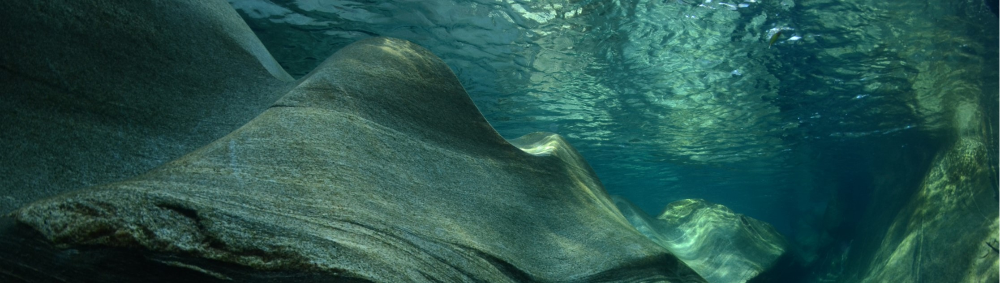

3D graphics
This project is a simulation of a submarine in a model area. It was created in C++ using the OpenGL framework over the course of a semester (12 weeks) in my third year of university. The project contains:
- sub can rotate around its x and y axis. There is a limit to how far the sub can rotate around its x axis (e.g. pointing up and down) so that it can't flip over
- sub can accelarate in the direction the front of the sub is pointing
- sub as four camrea angles
- camera from behind (over the shoulder)
- camera from in front (looking behind)
- camera from above (top down)
- periscope camera able to look around from the sub using the mouse (first person)
- custom model with textures made in 3Ds max for sub and seabed
- custom lighting effect when above and below water line
- simple collision detection, limited by only being able to use 32 bit system
The sub use the arrow keys and spacebar to move around. Finally the c key is used to cycle through the camera angles
the project can be found as Github